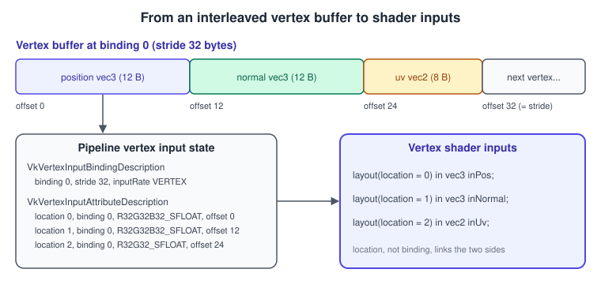
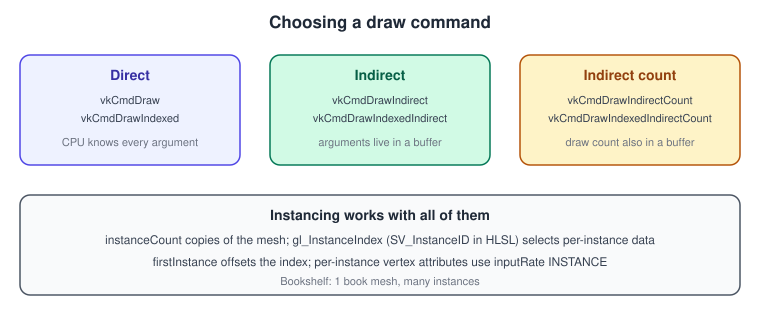
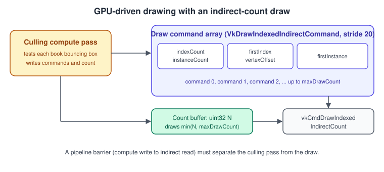

Vertex Input and Drawing in Vulkan
|
This content was generated with the assistance of AI and should be verified against the official documentation before being relied on in production. |
A draw call is the moment when everything prepared so far, the pipeline, the descriptors, the attachments and the dynamic state, is finally applied to some geometry. Vulkan splits that geometry description into two halves. The pipeline says how vertex data is laid out (formats, strides, which stream is per vertex and which is per instance). The command buffer says where the data is (which buffers and offsets) and how much of it to draw. This page covers both halves, from a single triangle to GPU-driven rendering with a count read from a buffer.
The facts were checked in November 2026. The version documented is Vulkan 1.4 (headers 1.4.3xx, LunarG SDK 1.4.363.0), with Vulkan 1.3 as
the minimum for the running example. Where a feature became core is stated in each section: drawIndirectCount is core since 1.2,
vkCmdBindIndexBuffer2, uint8 indices and the vertex attribute divisor are core since 1.4, and multi-draw is still an extension
(VK_EXT_multi_draw). Everything works on desktop GPUs from all vendors, on current Android devices and, through MoltenVK or KosmicKrisp, on Apple
platforms, with the caveats noted below.
This is a supporting step of the Vulkan Bookshelf running example (C++20, Vulkan-Hpp RAII, VMA, GLFW or SDL3, Slang shaders with GLSL and HLSL alternatives). It sits between the triangle of Bookshelf 01 and the instanced shelf of Bookshelf 02. The pipeline that consumes this state is in Graphics Pipeline Overview, the buffers themselves in Buffers, Images and Views and Memory Heaps, Types and VMA, and the concept is explained API-neutrally in Meshes and Vertex Data. The matching pages in other APIs are OpenGL buffers and vertex specification, OpenGL instancing and indirect drawing and Metal buffers and vertex descriptors.
The path from buffer to vertex shader

Vulkan has no vertex array objects and no implicit attribute state. The pipeline is created with a VkPipelineVertexInputStateCreateInfo
that holds two arrays.
| Structure | Field | Meaning |
|---|---|---|
|
|
Index of a vertex buffer slot, the same number you pass to |
|
Bytes between the start of one element and the next. It must not exceed |
|
|
|
|
|
|
The |
|
Which buffer slot supplies the attribute. |
|
|
A |
|
|
Byte offset of the attribute inside one element. It is limited by |
The format controls conversion. A _UNORM or _SNORM format becomes a float between 0 and 1 or between -1 and 1, _SFLOAT is passed as is, _UINT and
_SINT arrive as integers (declare the input as uvec4 or ivec4), and _USCALED and _SSCALED convert integers to floats without normalising. The formats usable for vertex
buffers are those that report VK_FORMAT_FEATURE_VERTEX_BUFFER_BIT in vkGetPhysicalDeviceFormatProperties, and the core specification requires a
long list of them. Packed formats such as VK_FORMAT_A2B10G10R10_SNORM_PACK32 for normals and VK_FORMAT_R16G16_SFLOAT for texture coordinates halve the memory
traffic and are the usual optimisation once the vertex layout is stable.
Interleaved and separate streams
An interleaved buffer (position, normal and uv next to each other, as in the figure) is the simplest and keeps all the data of a vertex in one cache line. Separate streams (one buffer for positions, one for everything else) help when some passes need only positions: the depth pre-pass and the shadow pass then read a third of the data. Both use the same API; only the binding descriptions change. A common compromise is two bindings, one with positions and one with the remaining attributes, which is what the Bookshelf shadow pass uses later.
A complete vertex layout in Vulkan-Hpp
#include <vulkan/vulkan_raii.hpp>
#include <glm/glm.hpp>
#include <array>
struct Vertex {
glm::vec3 position; // offset 0
glm::vec3 normal; // offset 12
glm::vec2 uv; // offset 24, total size 32
static vk::VertexInputBindingDescription binding() {
return vk::VertexInputBindingDescription{}
.setBinding(0)
.setStride(sizeof(Vertex))
.setInputRate(vk::VertexInputRate::eVertex);
}
static std::array<vk::VertexInputAttributeDescription, 3> attributes() {
return {
vk::VertexInputAttributeDescription{0, 0, vk::Format::eR32G32B32Sfloat, offsetof(Vertex, position)},
vk::VertexInputAttributeDescription{1, 0, vk::Format::eR32G32B32Sfloat, offsetof(Vertex, normal)},
vk::VertexInputAttributeDescription{2, 0, vk::Format::eR32G32Sfloat, offsetof(Vertex, uv)},
};
}
};
vk::PipelineVertexInputStateCreateInfo makeVertexInput(
const vk::VertexInputBindingDescription& binding,
const std::array<vk::VertexInputAttributeDescription, 3>& attrs) {
return vk::PipelineVertexInputStateCreateInfo{}
.setVertexBindingDescriptions(binding)
.setVertexAttributeDescriptions(attrs);
}The returned structure keeps pointers into binding and attrs, so keep both alive until the pipeline is created. The vertex shader declares the same locations, here in Slang with GLSL and HLSL alternatives:
// Slang
struct VSInput {
float3 position : POSITION; // location 0
float3 normal : NORMAL; // location 1
float2 uv : TEXCOORD0; // location 2
};// GLSL
layout(location = 0) in vec3 inPosition;
layout(location = 1) in vec3 inNormal;
layout(location = 2) in vec2 inUv;In HLSL compiled to SPIR-V with DXC, the semantics map to locations in declaration order, or you can write [[vk::location(n)]] to be explicit.
Vertex and index buffers
A buffer used for vertices needs VK_BUFFER_USAGE_VERTEX_BUFFER_BIT, one for indices needs VK_BUFFER_USAGE_INDEX_BUFFER_BIT. For static meshes you create them in
device-local memory and fill them through a staging buffer (see the staging flow in Memory Heaps, Types and VMA). One buffer may
hold vertices and indices of many meshes, which reduces the number of allocations and bindings; the offsets then go into firstIndex, vertexOffset or the bind calls.
// Bind a vertex buffer to slot 0 and an index buffer, then draw.
// 'cmd' is a vk::raii::CommandBuffer currently recording inside a rendering scope.
vk::Buffer vertexBuffers[] = { *vertexBuffer };
vk::DeviceSize offsets[] = { 0 };
cmd.bindVertexBuffers(0, vertexBuffers, offsets);
cmd.bindIndexBuffer(*indexBuffer, 0, vk::IndexType::eUint16);
cmd.drawIndexed(36, 1, 0, 0, 0); // indexCount, instanceCount, firstIndex, vertexOffset, firstInstanceIndex types
vk::IndexType::eUint16 and eUint32 are always available. eUint8 (VK_INDEX_TYPE_UINT8) became core in Vulkan 1.4 through VK_KHR_index_type_uint8, with the feature
indexTypeUint8 that must be enabled; before 1.4 the extension (previously VK_EXT_index_type_uint8) was the way to get it. Eight-bit indices suit meshlet-like small
clusters. eNoneKHR (VK_INDEX_TYPE_NONE_KHR) exists for ray tracing geometry that is not indexed.
Choosing between 16 and 32 bits is a memory and bandwidth decision: 16-bit indices address 65536 vertices (65535 if you use primitive restart, see below), and mesh data is usually split to fit. The Bookshelf book has 24 vertices and 36 indices, so it uses 16 bits.
vkCmdBindIndexBuffer2
Vulkan 1.4 promoted VK_KHR_maintenance5, which adds vkCmdBindIndexBuffer2. It takes an explicit size of the bound range, which lets robust buffer access clamp index
fetches correctly, and it accepts a VK_WHOLE_SIZE value:
cmd.bindIndexBuffer2(*indexBuffer, /*offset*/ 0, /*size*/ VK_WHOLE_SIZE, vk::IndexType::eUint16);Common mistakes
-
Wrong offset alignment. Index buffer offsets must be a multiple of the index size (2 for uint16, 4 for uint32). Vertex buffer offsets only need to respect the attribute alignment rules in the specification (the attribute offset must be a multiple of the component size of the format, or of the whole format when the device reports no relaxed rule).
-
Format mismatch. Declaring
vec4in the shader for anR8G8B8A8_UINTattribute reads integers as garbage floats. Match the shader type to the format class. -
Forgetting the vertex offset.
vertexOffsetis added to every index value, signed, so a mesh merged into a big buffer needs it (or pre-biased indices). -
Attributes with the same location in two bindings. A location may appear only once in the attribute array.
Primitive topology and restart
VkPipelineInputAssemblyStateCreateInfo::topology selects how vertices form primitives: point list, line list, line strip, triangle list, triangle strip, triangle fan,
the four _WITH_ADJACENCY variants (which need geometry shaders, see Tessellation and Geometry Shaders) and
patch list (tessellation). Triangle fans are not available on portability implementations unless triangleFans is reported by VK_KHR_portability_subset, which matters on MoltenVK.
With primitiveRestartEnable set, a special index (all bits one, 0xFFFF for uint16, 0xFFFFFFFF for uint32, 0xFF for uint8) ends a strip and starts a new one. Restart
works for strip and fan topologies; list topologies only accept it when the primitive restart feature for lists (VK_EXT_primitive_topology_list_restart) is enabled. Triangle
lists are what modern content uses, because indexing already removes most duplication and lists vectorise better on tilers. Both topology and restart can be dynamic state
(VK_DYNAMIC_STATE_PRIMITIVE_TOPOLOGY and VK_DYNAMIC_STATE_PRIMITIVE_RESTART_ENABLE, core since 1.3), see
Dynamic State, Shader Objects and Pipeline Libraries.
Draw commands
All draw commands exist inside a dynamic rendering scope (vkCmdBeginRendering, see Dynamic Rendering) or, in legacy code, a render pass.

| Command | Arguments come from | Notes |
|---|---|---|
|
command buffer |
Non-indexed. |
|
command buffer |
Reads indices from the bound index buffer starting at |
|
a buffer of |
|
|
the same, with the count in a second buffer |
Core since Vulkan 1.2 ( |
Two pitfalls deserve attention. First, the core vkCmdDraw*Indirect commands are allowed to use drawCount greater than 1 only if the multiDrawIndirect device feature is
enabled; otherwise drawCount must be 0 or 1. Second, a non-zero firstInstance in an indirect command requires the drawIndirectFirstInstance feature. Both are universally available on desktop
hardware but are not guaranteed on all mobile GPUs, so check them (or the Roadmap profile you target) before relying on them.
Instancing
instanceCount draws the same vertices several times. Per-instance data reaches the shader in two ways:
-
Per-instance vertex attributes: a second binding with
inputRate = VK_VERTEX_INPUT_RATE_INSTANCE(for example amat4as fourvec4attributes at consecutive locations). -
Indexing a buffer with
gl_InstanceIndex: the instance data lives in a storage buffer or uniform buffer array, and the shader reads elementgl_InstanceIndex. This is simpler, avoids the four-attribute matrix trick, and is what the Bookshelf uses.
gl_InstanceIndex includes firstInstance, unlike OpenGL’s gl_InstanceID. The value OpenGL calls gl_InstanceID is gl_InstanceIndex - gl_BaseInstance, and gl_BaseInstance needs the
shaderDrawParameters feature (core since 1.1, VkPhysicalDeviceShaderDrawParametersFeatures).
Porting from OpenGL is the usual place where this difference bites; see Porting OpenGL to Vulkan, Metal and WebGPU.
Vertex attribute divisor
When one value should serve several consecutive instances (for example one colour per group of four instances), the divisor feature does it without duplicating data.
VK_KHR_vertex_attribute_divisor became core in Vulkan 1.4. You add a VkPipelineVertexInputDivisorStateCreateInfo to the pNext chain of the vertex input state and give a
divisor for each instance-rate binding. A divisor of 0 (needs vertexAttributeInstanceRateZeroDivisor) means the attribute never advances and keeps the value of the first instance. Any other divisor needs
vertexAttributeInstanceRateDivisor. On Vulkan 1.3 devices the same feature exists as the extensions VK_KHR_vertex_attribute_divisor or VK_EXT_vertex_attribute_divisor.
vk::VertexInputBindingDivisorDescription divisor{ /*binding*/ 1, /*divisor*/ 4 };
vk::PipelineVertexInputDivisorStateCreateInfo divisorInfo{};
divisorInfo.setVertexBindingDivisors(divisor);
vk::PipelineVertexInputStateCreateInfo vertexInput{};
vertexInput.setVertexBindingDescriptions(bindings)
.setVertexAttributeDescriptions(attrs)
.setPNext(&divisorInfo);Indirect drawing
Indirect draws move the draw arguments out of the command buffer and into a GPU buffer. That makes it possible for a compute shader to decide, every frame, what is drawn, without a round trip to the CPU. The command structures are plain data:
typedef struct VkDrawIndexedIndirectCommand {
uint32_t indexCount;
uint32_t instanceCount;
uint32_t firstIndex;
int32_t vertexOffset;
uint32_t firstInstance;
} VkDrawIndexedIndirectCommand; // 20 bytes
typedef struct VkDrawIndirectCommand {
uint32_t vertexCount;
uint32_t instanceCount;
uint32_t firstVertex;
uint32_t firstInstance;
} VkDrawIndirectCommand; // 16 bytes
Culling and drawing the Bookshelf books
The Bookshelf scene has a few thousand books. A compute shader tests each against the camera frustum and appends a draw command per visible mesh; here every book
shares one mesh, so the compute pass writes one command with an instanceCount and a compacted instance list. The host code records the compute pass, a barrier, then the draw:
// 1) Reset the count, 2) dispatch the culling shader, 3) barrier, 4) draw.
cmd.fillBuffer(*countBuffer, 0, sizeof(uint32_t), 0);
// (a transfer-write -> compute-read/write barrier belongs here; omitted for brevity)
cmd.bindPipeline(vk::PipelineBindPoint::eCompute, *cullPipeline);
cmd.bindDescriptorSets(vk::PipelineBindPoint::eCompute, *cullLayout, 0, *cullSet, {});
cmd.dispatch((bookCount + 63) / 64, 1, 1);
// Synchronization2 barrier: compute shader writes -> indirect command reads and vertex shader reads.
vk::MemoryBarrier2 barrier{};
barrier.setSrcStageMask(vk::PipelineStageFlagBits2::eComputeShader)
.setSrcAccessMask(vk::AccessFlagBits2::eShaderStorageWrite)
.setDstStageMask(vk::PipelineStageFlagBits2::eDrawIndirect | vk::PipelineStageFlagBits2::eVertexShader)
.setDstAccessMask(vk::AccessFlagBits2::eIndirectCommandRead | vk::AccessFlagBits2::eShaderStorageRead);
vk::DependencyInfo dep{};
dep.setMemoryBarriers(barrier);
cmd.pipelineBarrier2(dep);
// ... vkCmdBeginRendering, bind graphics pipeline, vertex/index buffers, descriptor set with the instance list ...
cmd.drawIndexedIndirectCount(*drawBuffer, /*offset*/ 0,
*countBuffer, /*countOffset*/ 0,
/*maxDrawCount*/ maxDraws,
/*stride*/ sizeof(vk::DrawIndexedIndirectCommand));The matching Slang compute shader, reduced to the essentials:
struct DrawCommand { uint indexCount; uint instanceCount; uint firstIndex; int vertexOffset; uint firstInstance; };
RWStructuredBuffer<DrawCommand> draws;
RWStructuredBuffer<uint> visibleCount; // atomic counter, also used as the draw count
RWStructuredBuffer<uint> visibleList;
StructuredBuffer<float4> boundingSpheres; // xyz = centre, w = radius
ConstantBuffer<FrustumData> frustum;
[shader("compute")]
[numthreads(64, 1, 1)]
void cullMain(uint3 id : SV_DispatchThreadID)
{
if (id.x >= frustum.bookCount) return;
float4 s = boundingSpheres[id.x];
for (int i = 0; i < 6; ++i)
if (dot(frustum.planes[i].xyz, s.xyz) + frustum.planes[i].w < -s.w) return;
uint slot;
InterlockedAdd(visibleCount[0], 1, slot);
visibleList[slot] = id.x;
}With indirect count, the number of draws is min(count buffer value, maxDrawCount), so a too-large count written by a buggy shader cannot read outside the draw
buffer. Many engines nevertheless clear the unused tail, because some tooling reads the entire range.
Rules and pitfalls for indirect draws
-
The compute pass and the draw must be separated by a barrier with
VK_PIPELINE_STAGE_2_DRAW_INDIRECT_BITandVK_ACCESS_2_INDIRECT_COMMAND_READ_BITin the destination scope, as in the code above. Missing this is the most common source of random flicker. -
The indirect buffer offset and stride must be multiples of 4. A stride of 0 treats multiple draws as tightly packed.
-
Use
VK_BUFFER_USAGE_INDIRECT_BUFFER_BITfor the draw buffer and the count buffer. -
Validation (
VK_LAYER_KHRONOS_validation) cannot see contents written by the GPU at record time. GPU-assisted validation checks the draw parameters at execution time (see Validation and Debug Utils). -
Indirect state does not include the vertex or index buffer bindings, the push constants or the pipeline: only the draw parameters are indirect. Changing meshes inside one indirect call needs the mesh data in shared buffers, with
firstIndexandvertexOffsetselecting the slice. -
Performance: one indirect call with thousands of draws is much cheaper than thousands of direct calls, but the saving depends on the driver. Measure on the target devices, mobile ones in particular.
Multi-draw
VK_EXT_multi_draw adds vkCmdDrawMultiEXT and vkCmdDrawMultiIndexedEXT, which issue an array of draws from the CPU in one call (VkMultiDrawInfoEXT and VkMultiDrawIndexedInfoEXT). It
reduces call overhead when many small ranges of one big buffer are drawn with the same state. It is an extension, not core in Vulkan 1.4, and requires the multiDraw feature. When the data is already on the GPU, indirect draws with a
drawCount larger than 1 provide the same effect without an extension and are the more common choice.
std::array<vk::MultiDrawIndexedInfoEXT, 3> draws = {
vk::MultiDrawIndexedInfoEXT{ 0, 36, 0 }, // firstIndex, indexCount, vertexOffset
vk::MultiDrawIndexedInfoEXT{ 36, 36, 24 },
vk::MultiDrawIndexedInfoEXT{ 72, 192, 48 },
};
cmd.drawMultiIndexedEXT(draws, /*instanceCount*/ 1, /*firstInstance*/ 0, sizeof(vk::MultiDrawIndexedInfoEXT));Vertex pulling with buffer device address
Because Vulkan 1.2 made buffer device address core, a vertex shader can ignore the fixed-function vertex input entirely and read vertex data from a storage buffer or through a
64-bit pointer passed as a push constant. The pipeline then has an empty vertex input state and the shader indexes with gl_VertexIndex. This simplifies
supporting many vertex formats, allows meshlet-style data layouts and is the basis of bindless renderers (see Bindless Descriptor Indexing, Buffer and Heap).
Fixed-function fetch is still worthwhile on some mobile GPUs, where the hardware attribute fetch and format conversion are faster than shader loads.
struct Vertex { float3 position; float3 normal; float2 uv; };
struct PushData {
float4x4 viewProj;
Vertex* vertices; // device address of the vertex buffer
};
[[vk::push_constant]] ConstantBuffer<PushData> pc;
[shader("vertex")]
float4 vertexMain(uint vid : SV_VertexID) : SV_Position
{
Vertex v = pc.vertices[vid];
return mul(pc.viewProj, float4(v.position, 1.0));
}Where the books are outdated
| Topic | Older guide (VPG chapter 8, VCB chapter 9) | Current practice |
|---|---|---|
Draw state |
Vertex input described in the pipeline and drawn inside a render pass with a framebuffer. |
The vertex input description is unchanged, but drawing happens inside |
Index types |
|
|
Indirect count |
Only |
|
Instance divisor |
Not available. |
The vertex attribute divisor is core in 1.4. |
Multi-draw |
Absent. |
|
Vertex data access |
Fixed-function attributes only. |
Buffer device address (core 1.2) enables vertex pulling. |
Barriers for indirect data |
|
Synchronization2 barriers with |
Checklist
-
The shader input locations and types match the attribute descriptions and format classes.
-
Strides and offsets satisfy the device limits; the index offset matches the index size.
-
multiDrawIndirect,drawIndirectFirstInstanceanddrawIndirectCountare enabled before using the features they guard. -
A barrier with the indirect stage and access bits follows every GPU write to a draw buffer.
-
vertexOffsetandfirstInstanceare used on purpose, andgl_InstanceIndexis not mistaken forgl_InstanceID.